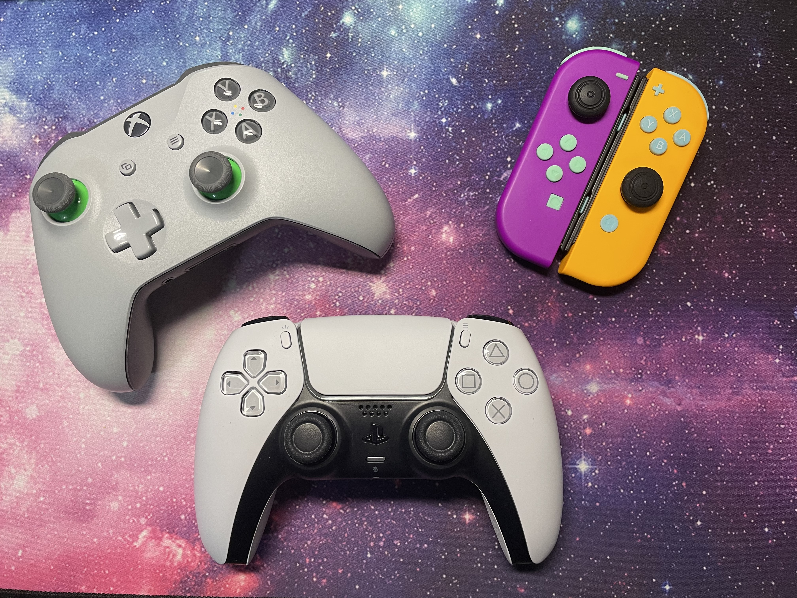
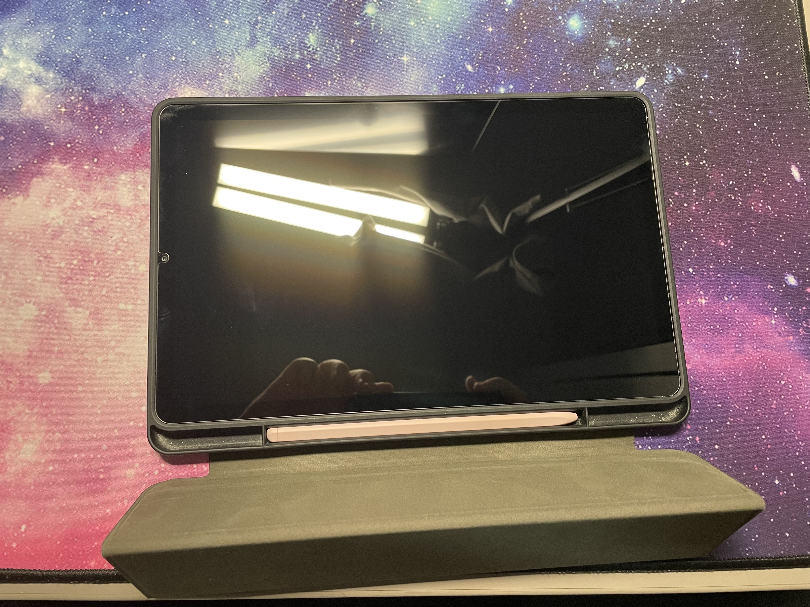

You might be asking yourself "what are your limitations when fixing electronics?" Glad you asked! Sadly, I'm currently lacking the funds and skills to fix most electronics. However, I plan to continue learning new skills and techniques. So stay tuned! Soon, I might be able to repair phones, tablets, you name it!
Controllers
As you probably saw from the home page, I consider controllers to be vastly easier to repair compared to other electronics. All you need to fix a controller are some screwdrivers, spare parts, a soldering gun/iron (if fixing anything on the motherboard), and some patience. If you are ever in need of a controller or hobby, be sure to check back here or on my ebay store for a plethera of controllers. From broken to lightly used, and from nonfunctional to functional. I plan on selling all sorts of stuff here, so I hope you find something of value here!
Gaming consoles

I'll be honest, I don't have a ton of knowledge when it comes to working on consoles. But that doesn't mean I won't try. Thus far, I've fixed my (old) nintendo switch as well as the power cord to the family Wii U. My switch started to overheat, and the fan would be on full blast almost all the time. So I took it apart and cleaned out all the dust, and added some new thermal paste while I was at it. That seemed to fix the overheating issue. I've watched tons of My Mate Vince and TronicsFix switch repair videos, and it's helped me gain both the knowledge and desire to fix consoles. Still not the best at fixing consoles, but now I want to fix electronics as a hobby if I can.
Mobile Devices
As stated before, I watched tons of My Mate Vince and TronicsFix videos. I also watched a lot of phone repair videos, and have since grown interest in fixing electronics. If I start fixing consoles, why not phones? Tablets? Speakers and headphones? I've actually fixed a ton of my personal headphones, and consider headphones to be a good warm up. I don't have much else to add, but I hope to be fixing more common devices in the near future.